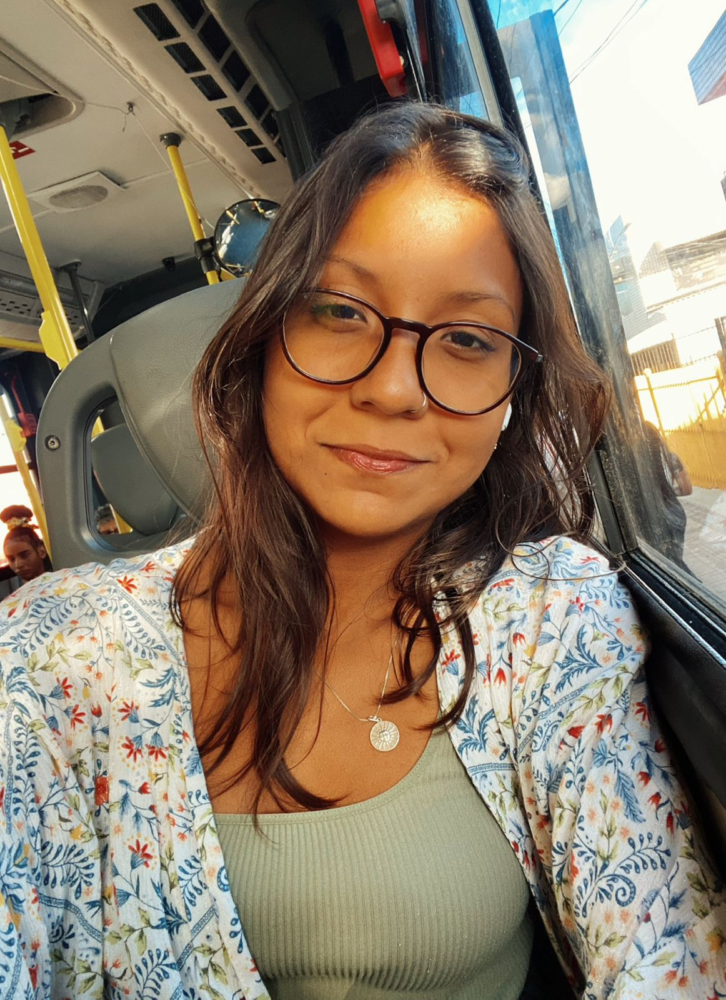

Educação que conecta e Transformas .
Olá! Sou Rhuanna Luna, educadora dedicada ao acompanhamento integral de estudantes até os 14 anos. Com uma abordagem que abrange todas as áreas do conhecimento, foco em despertar a curiosidade e o prazer de aprender em cada fase do desenvolvimento escolar.
Atualmente, curso Ciências Biológicas na UFPE, onde aprofundo minha paixão pela vida e pela natureza para trazer uma visão científica e inovadora para a sala de aula. Acredito que ensinar é mais do que transmitir matérias; é cultivar o futuro.